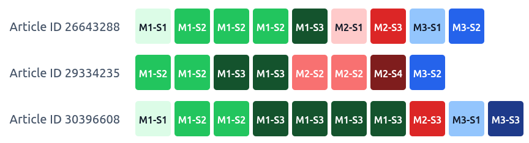

Visualizing the DNA of Discourse
Sequencing Rhetorical Moves and Steps in Python
Overview
- The Pedagogical Challenge: Making academic discourse explicit
- Solution: Visualizing the Move-Step Analysis
- MoveStepViz
- Visualization tool inspired by Multiple Sequence Alignment (MSA) in bioinformatics
- Decoding and displaying rhetorical structure at a glance
- Implications:
- Data-driven learning (DDL) for genre knowledge
- Potentials with genre analysis with AI-annotation
The Pedagogical Challenge
Why Novice Writers Struggle with Genre?
Novice and L2 academic writers often struggle to replicate the rhetorical expectations of research genres.
Students know they need to “provide background,” but miss how it is done and what counts as appropriate presentation of background in academic writing
- My teaching context: ESAP in STEM MSc in the UK, non-credit bearing module
Rhetorical moves & steps are often implicit and the ordering can be discipline-specific.
Limited exposure to discourse / narrative in STEM disciplines (Falconer 2022; Ou & Söderlindh 2026)
Explicit instruction and demonstration have been shown to benefit rhetorical strategies (Flowerdew 2000; Cheng 2007; 2008)
What is Move-Step Analysis?
Swalesian CARS Model (1990; 2004)
- Move 1: Establishing a territory
- Step 1: Claiming centrality
- Step 2: Making topic generalizations
- Step 3: Reviewing previous research
- Move 2: Establishing a niche
- Step 1: Counter-claiming
- Step 2: Indicating a gap
- Step 3: Question-raising
- Step 4: Continuing a tradition
- Move 3: Occupying the niche
- Step 1a: Outlining purposes
- Step 1b: Announcing present research
- Step 2: Announcing principal findings
- Step 3: Indicating research article structure
“In recent years, AI-assisted language learning has attracted widespread attention in applied linguistics.
Novice researchers often find mastering academic genre conventions challenging.
Previous studies (e.g., Swales, 1990; Cotos et al., 2017) have highlighted the role of rhetorical move patterns.”
“In recent years, AI-assisted language learning has attracted widespread attention in applied linguistics. Step 1
Novice researchers often find mastering academic genre conventions challenging. Step 2
Previous studies (e.g., Swales, 1990; Cotos et al., 2017) have highlighted the role of rhetorical move patterns.” Step 3
By labelling the Moves and Steps, researchers have the tools to investigate (i) how these typical components are ordered and (ii) how they are realized in language.
Multiple Sequence Alignment (MSA)

- Aligns DNA/RNA/amino acid sequences into colour-coded blocks.
- Reveals patterns, mutations, and conservation across organisms, by comparing rows.
The “DNA of Discourse”
Multiple Sequence Alignment in biology translates directly to Rhetorical Sequence Alignment in language education:
- Like organisms, texts contain basic components that often display a normal, typical order.
- By visualizing the pattern, users can compare similarity and diversity.
Introducing MoveStepViz
MoveStepViz
A pedagogical visualization toolkit designed for language educators, students, and corpus linguists.
Python Package (movestepviz v0.2.3)
- Open-source on PyPI
- Generates publication-ready DNA-strip diagrams.
- Pre-loaded with frequently-used rhetorical schemes (CARS, DRaC).
- Fully customizable colours, labels, and layouts.
Web Interface
- User-friendly interface for teachers and students
- Interactive exploration
- Drag-and-drop custom annotation upload
Visualizing Moves and Steps
Similar to a DNA sequence, a row represents a unit containing foundamental elements:

- Each Move has a distinct color (Green = M1, Red = M2, etc.)
- Steps within the same move share shades of the family for intuitive hierarchy
- Readable In-Cell Labels (e.g.
M1-S1,M1-S2,M2-S1,M3-S1)
This provides users an overview of the progression of moves, while keeping track of the exact steps used.
- Some steps repeat
- Some steps are optional
Pre-loaded Genre & Section Schemes
| Scheme | Research Article Section | Foundational Research |
|---|---|---|
Swales2004 |
Introduction (CARS model) | Swales (1990, 2004) |
Cotos_etal2017 |
Methods (DRaC model) | Cotos, Huffman, & Link (2017) |
Yang_Allison2003_Results |
Results | Yang & Allison (2003) |
Yang_Allison2003_Discussion |
Discussion | Yang & Allison (2003) |
More Customization
- Export of figure in various formats (JPG, PNG, SVG)
- Display and labelling options (
M1-S3vs.1cvs.1.3) - Custom colour palette to highlight particular moves/steps
- Basic statistics of steps (# of texts, # of steps, # of unique steps)
- Normalized Width mode (for longer sections)

More Intuitive Input to MoveStepViz?
Web Interface
Implications
Data-Driven Learning for Genre Knowledge
- With realistic examples, students are able to see how attested examples conform to the idealized models or how / where particular steps deviate from the norm.
- Potential to visualize student writing (requires further annotation)
- Also: length of consecutive sentences for particular moves and steps can be useful for novice writers.
Educator as Developer
Educator have always been developers:
- Making meaning (backend logic) visible with form (frontend interaction)
- Anticipating & accommodating different ‘user behaviours’
- Constant error handling, adaptation & updating
What AI-Assisted Programming Buys Us
- Rapid prototyping & builds
- Reduced technical challenge
- More time for creating bespoke tools
- understanding of student needs
- educators’ domain expertise
- understanding of student needs
Summary & Takeaways
- Making Rhetoric Moves-Step Analysis Visible
- Flexible Adoption (web interface & Python package
movestepviz) - Empowering CALL Educators with custom tools for their own classroom needs
- Next step: Connecting with automated annotation!
Thank You! Questions and Comments Are Welcome!
References
Cheng, A. (2007). Transferring generic features and recontextualizing genre awareness: Understanding writing performance in the ESP genre-based literacy framework. English for specific purposes, 26(3), 287-307.
Cheng, A. (2008). Analyzing genre exemplars in preparation for writing: The case of an L2 graduate student in the ESP genre-based instructional framework of academic literacy. Applied linguistics, 29(1), 50-71.
Cotos, E., Huffman, T., & Link, S. (2017). Research article abstracts as genre-specific texts: The generic-specific analysis (GSA). English for Specific Purposes, 46, 50-63.
Dudley-Evans, T., & St John, M. J. (1998). Developments in English for specific purposes: A cross-curricular approach. Cambridge University Press.
Falconer, H. M. (2022). Masking Inequality with good intentions: Systemic bias, counterspaces, and discourse acquisition in STEM Education. WAC Clearinghouse. https://wacclearinghouse.org/docs/books/masking/inequality.pdf
Flowerdew, L. (2000). Using a genre-based framework to teach organizational structure in academic writing. ELT journal, 54(4), 369-378.
Ou, A. W., & Söderlindh, L. (2026). The complexity of disciplinary literacy and identity in STEM: A case study of student language use in project-based learning. Linguistics and Education, 95, 101581. https://doi.org/10.1016/j.linged.2026.101581
Propp, V. (1968[1928]). Morphology of the Folktale (2 ed.), translated by L. Scott. University of Texas Press.
Swales, J. M. (1990). Genre analysis: English in academic and research settings. Cambridge University Press.
Swales, J. M. (2004). Research genres: Explorations and applications. Cambridge University Press.
Yang, R., & Allison, D. (2003). Research articles in abstracts: Structure, patterns of move-step organization, and their pedagogical implications for ESP. English for Specific Purposes, 22(2), 127-148.
Project Resources
- Web App & Slides: charles-lam.net/presentations/eurocall2026
- PyPI Package:
pip install movestepviz - Package Documentation: pypi.org/project/movestepviz/
Further Discussion
Inclusivity and Support for Novice Writers
- Genre knowledge is rarely taught explicitly in STEM curriculum
- Needs of MSc level students are different from UG
- Sub-disciplinary differences (Biomedical vs. web lab disciplines vs. bioinformatics)
- Novice writers, not just writers / language users with backgrounds in other languages (or “international students”)
- “Home students” could use a lot of help too, especially in STEM disciplines.
- Addressing diversity in disciplines (by identifying various patterns and empirically how they differ from the idealized ‘models’)
Potential Use beyond Genre in EAP
Narrative structure & progression (Formal structure in Russian formalism, Propp 1968[1928])
Interactions and turn-taking
- Move:Step :: Speaker:Interactive device/patterns